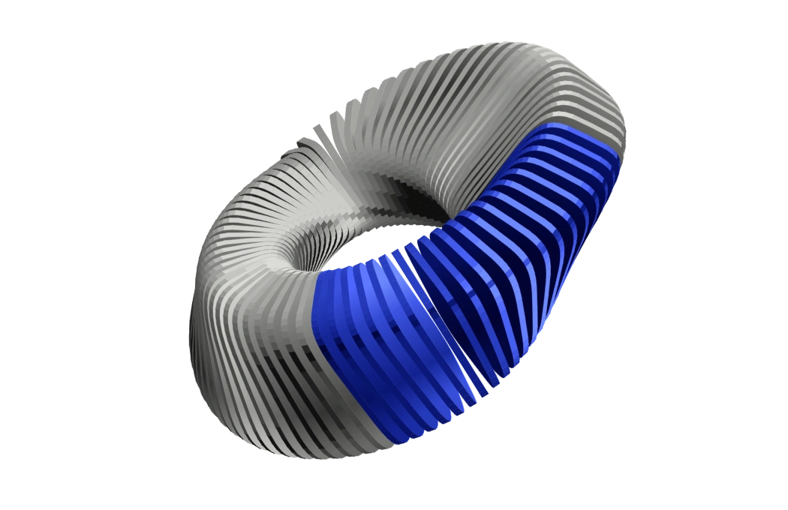

跳到正文
物与界面
首页
设计方向
关于我
Design portfolio / 2026
Objects
&
Interfaces
.
周熙皓
/ 个人设计作品集
工业设计专业大三学生 · 信息体验设计方向
浏览设计方向
叠片环
/ FORM STUDY
拖动旋转

旋转
045°
立体
正视
设计方向
Discipline index
3 个方向
产品设计
+
Product design
UI / UX
+
Interface & experience
文创设计
+
Culture & craft